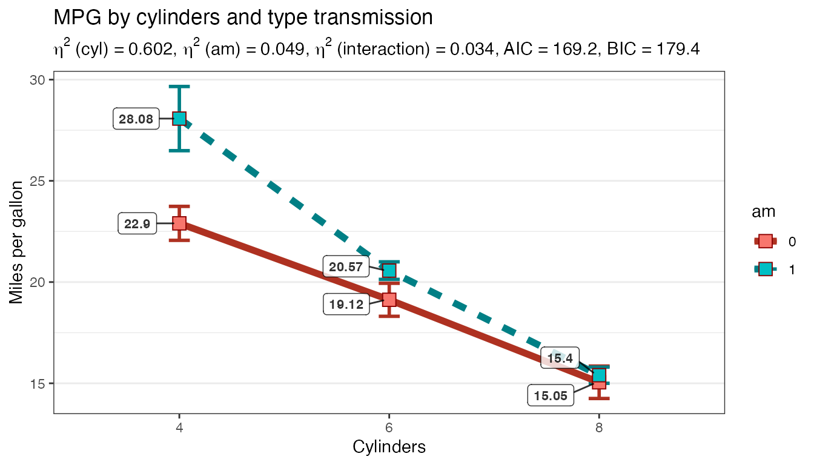
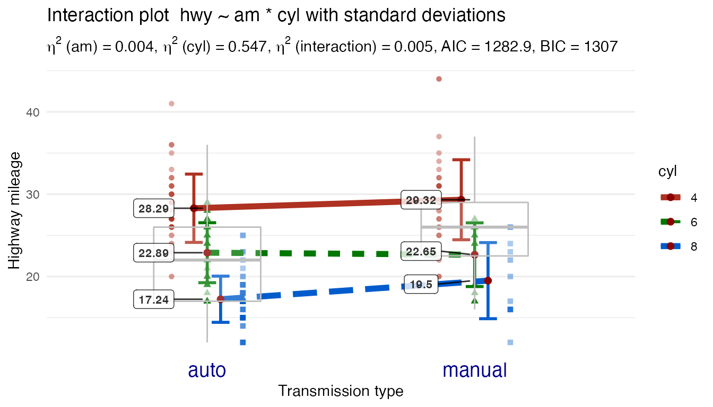

Using Plot2WayAnova
Chuck Powell
2020-03-17
Source:vignettes/Using-Plot2WayANOVA.Rmd
Using-Plot2WayANOVA.RmdBackground
The CGPfunctions package includes functions that I find useful for teaching statistics especially to novices (as well as an opportunity to sharpen my own R skills). I only write functions when I have a real need – no theory – just help for actually practicing the art. They typically are not “new” methods but rather wrappers around either base R or other packages and are very task focused. This vignette covers one function from the package that tries to help users (especially students) do one thing well by pulling together pieces from a variety of places in R. Plot2WayANOVA, which as the name implies conducts a 2 way ANOVA and plots the results. I always try and find the right balance between keeping the number of dependencies to a minimum and not reinventing the wheel and writing functions that others have done for me. The function makes use of the following non base r packages.
-
ggplot2as the work horse for all the actual plotting -
carfor it’s ability to compute Type II sums of squares, we’ll address why that’s important in more detail later in the scenario. We’ll also make use of it’sleveneTest. -
sjstatswhich takes out ANOVA table and gives us other important information such as the effect sizes (\(\eta^2\) and \(\omega^2\) ) through use of itsanova_statsfunction. Prior to this version I had been using my own local function but this runs rings around what I could do. -
broomExtra::glancewill also help us grab very important results like \(R^2\) and display them
Vignette Info
The ANOVA (Analysis of Variance) family of statistical techniques allow us to compare mean differences of one outcome (dependent) variable across two or more groups (levels) of one or more independent variables (factor). It is also true that ANOVA is a special case of the GLM or regression models so as the number of levels increase it might make more sense to try one of those approaches. The 2 Way ANOVA allows for comparisons of mean differences across 2 independent variables factors with a varying numbers of levels in each factor.
If you prefer a more regression based approach with a very similar plotted result I highly recommend the interactions package which I was unaware of until just recently. It is available through CRAN.
The Plot2WayANOVA function conducts a classic analysis of variance (ANOVA) in a sane and defensible manner, not necessarily the only one. It’s real strength (I hope) lies in the fact that it is pulled together in one function and more importantly allows you to visualize the results concurrently with no additional work.
Scenario and data
Imagine that you are interested in understanding whether a car’s fuel efficiency (mpg) varies based upon the type of transmission (automatic or manual) and the number of cylinders the engine has. Let’s imagine that the mtcars data set is actually a random sample of 32 cars from different manufacturers and use the mean mpg grouped by am and cyl to help inform our thinking. While we expect variation across our sample we’re interested in whether the differences between the means by grouping of transmission type and cylinders is significantly different than what we would expect in random variation across the data.
In simplistic terms we want to know whether am matters, cyl matters or if it depends on the interaction of the two. It’s this interaction term that typically confuses novices or is difficult to “see”. That’s where a good interaction graph can hopefully play a key role, and that’s what the Plot2WayANOVA focuses on.
There’s no lack or tools or capabilities in base R or in the many packages to do this task. What this function tries to do is pull together the disparate pieces with a set of sane defaults and a simple interface to work with it. At its simplest you would require the library and then enter this command:
Plot2WayANOVA(mpg ~ am * cyl, mtcars) which lays our question out in R’s vernacular with a formula and a dataframe. Optionally we can specify a different confidence level and choose a line or a bar graph.
“Under the hood”, however there’s a lot of nice features at work.
- Some basic error checking to ensure a valid formula and dataframe. The function accepts only a fully crossed formula to check for an interaction term
- It ensures the dependent (outcome) variable is numeric and that the two independent (predictor) variables already are or can be coerced to factors – the user is warned on the console if there are problems.
- A check is conducted to see if any of the variables of interest have missing cases – the user is warned on the console if there are problems.
- Balance is checked, that is whether the number of observations per cell when we cross
amandcylis equal. There’s some debate as to how much imbalance is permissible. But you’ll be given fair warning if there is any. - In addition to the classic ANOVA table information available in
aovorAnovayou’ll be presented with information about effect sizes like eta squared \(\eta^2\). They’re calculated and appended as additional columns. If you’re unfamiliar with them and want to know more especially where the numbers come from I recommend a good introductory stats text. I recommend Learning Statistics with R LSR see Table 14-1 on page 432. - A summarized table of means, standard deviations, standard errors of the means, confidence intervals, and group sizes for each of the crossed combinations in our example that’s 6 groupings 3 levels of cylinder and 2 levels of automatic or manual.
- Some measures of overall fit including \(R^2\)
- If any of the effect terms (main or interaction) are significant you’ll be presented with a post-hoc comparison of the means. By default a Scheffe test is run but the user can choose from several supported options.
- The Homogeneity of Variance assumption is tested with Brown-Forsythe
- The normality assumption is tested with Shapiro-Wilk
Installation
# Install from CRAN
install.packages("CGPfunctions")
# Or the development version from GitHub
# install.packages("devtools")
devtools::install_github("ibecav/CGPfunctions")then load the library.
library(CGPfunctions)
#> Registered S3 methods overwritten by 'lme4':
#> method from
#> cooks.distance.influence.merMod car
#> influence.merMod car
#> dfbeta.influence.merMod car
#> dfbetas.influence.merMod carExample of using the function
The only two required parameters are a formula and a dataframe (like) object. If we run the function in its simplest form here’s what we get.
Plot2WayANOVA(formula = mpg ~ am * cyl, dataframe = mtcars)
#>
#> Converting am to a factor --- check your results
#>
#> Converting cyl to a factor --- check your results
#>
#> --- WARNING! ---
#> You have an unbalanced design. Using Type II sum of
#> squares, to calculate factor effect sizes eta and omega.
#> The R Squared reported is for the overall model but your
#> two factors account for 0.684 of the type II sum of
#> squares, as opposed to the 0.788 reported below for
#> overall model fit!
#> term sumsq meansq df statistic p.value etasq partial.etasq omegasq
#> 1 am 36.767 36.767 1 3.999 0.056 0.049 0.133 0.036
#> 2 cyl 456.401 228.200 2 24.819 0.000 0.602 0.656 0.571
#> 3 am:cyl 25.437 12.718 2 1.383 0.269 0.034 0.096 0.009
#> 4 Residuals 239.059 9.195 26 NA NA NA NA NA
#> partial.omegasq epsilonsq cohens.f power
#> 1 0.086 0.036 0.392 0.515
#> 2 0.598 0.578 1.382 1.000
#> 3 0.023 0.009 0.326 0.298
#> 4 NA NA NA NA
#>
#> Measures of overall model fit
#> # A tibble: 1 x 11
#> r.squared adj.r.squared sigma statistic p.value df logLik AIC BIC
#> <dbl> <dbl> <dbl> <dbl> <dbl> <int> <dbl> <dbl> <dbl>
#> 1 0.788 0.747 3.03 19.3 5.18e-8 6 -77.6 169. 179.
#> # … with 2 more variables: deviance <dbl>, df.residual <int>
#>
#> Table of group means
#> # A tibble: 6 x 9
#> # Groups: am [2]
#> am cyl TheMean TheSD TheSEM CIMuliplier LowerBound UpperBound N
#> <fct> <fct> <dbl> <dbl> <dbl> <dbl> <dbl> <dbl> <int>
#> 1 0 4 22.9 1.45 0.839 4.30 19.3 26.5 3
#> 2 0 6 19.1 1.63 0.816 3.18 16.5 21.7 4
#> 3 0 8 15.0 2.77 0.801 2.20 13.3 16.8 12
#> 4 1 4 28.1 4.48 1.59 2.36 24.3 31.8 8
#> 5 1 6 20.6 0.751 0.433 4.30 18.7 22.4 3
#> 6 1 8 15.4 0.566 0.4 12.7 10.3 20.5 2
#>
#> Post hoc tests for all effects that were significant
#>
#> Posthoc multiple comparisons of means : Scheffe Test
#> 95% family-wise confidence level
#>
#> $cyl
#> diff lwr.ci upr.ci pval
#> 6-4 -4.756706 -10.029278 0.5158655 0.09684 .
#> 8-4 -7.329581 -11.723391 -2.9357710 0.00024 ***
#> 8-6 -2.572874 -7.620978 2.4752288 0.64828
#>
#> ---
#> Signif. codes: 0 '***' 0.001 '**' 0.01 '*' 0.05 '.' 0.1 ' ' 1
#>
#> Testing Homogeneity of Variance with Brown-Forsythe
#> *** Possible violation of the assumption ***
#> Levene's Test for Homogeneity of Variance (center = median)
#> Df F value Pr(>F)
#> group 5 2.736 0.04086 *
#> 26
#> ---
#> Signif. codes: 0 '***' 0.001 '**' 0.01 '*' 0.05 '.' 0.1 ' ' 1
#>
#> Testing Normality Assumption with Shapiro-Wilk
#>
#> Shapiro-Wilk normality test
#>
#> data: MyAOV_residuals
#> W = 0.96277, p-value = 0.3263
#>
#> Interaction graph plotted...
In the console you’ll receive a series of messages chronicling your progress and any diagnostic information. In this case am and cyl are being coerced to factors and you’re being prompted to make sure that’s what is intended.
Next you receive a warning because you have a very unbalanced design. There are only two 8 cylinder cars with a manual transmission and twelve 8 cylinder cars with automatics. Whereas there are eight 4 cylinders with manual and only three that are automatics. Imbalance in our design worries us for two reasons. One is that it causes a lack of statistical power and creates some math challenges in deciding how to divide up the sums of the squared differences. This data set causes the more troublesome worry. Are the number of cylinders and manual versus automatic related systematically which would call our whole design into question. Make sure you can answer questions about which is at work here, or make sure you have a balanced design.
A table follows that is intended to summarize the findings. We’ll discuss it more later when we examine the plot.
The overall measures table can be very handy for comparing numerous models. For example how does the AIC number change if we were to eliminate am ?
The table of group means is useful for looking at summary by group. Want the best gas mileage? Buy a 4 cylinder manual car.
In our simple example the only statistically significant effect is for the main effect of number of cylinders. Accordingly the Scheffe test is run against the three types of cars with 4, 6, or 8 cylinders and we can see that with a difference of 7.3 mpg eight and four cylinder cars are statistically significant even as we control for the multiple simultaneous comparisons.
The next step is to test homogeneity of variance also known as (homoscedasticity). Since the math in our ANOVA rely on the assumption that the variance for the different groupings of cars is more or less equal, we need to check that assumption.
We’ll use the Brown-Forsythe test. When you run the leveneTest in R the default is actually a Brown-Forsythe, to get a true Levene you must specify center = mean. Brown-Forsythe is actually more robust since it tests differences from the median. Not surprisingly when we consult out table of group results we have some reason for concern sine the standard deviations vary widely.
Finally, let’s address the assumption that our errors or residuals are normally distributed. We’re looking for evidence that our residuals are skewed or tailed or otherwise misshapen in a way that would influence our results. Surprisingly, there is actually quite a bit of controversy on this point since on the one hand we have strong reason to believe that our sample will be imperfect and that our population will not necessarily be “perfectly normal” either. Some argue that some simple plotting is all that is necessary looking for an unspecifiable amount of non normality that will trigger a search for the source. Other prefer a more formal approach using one or more statistical tests.
Plot2WayANOVA runs the most common test of the normality assumption (there are many) the Shapiro-Wilk test The statistics look good, no strong evidence in the data we have.
The default settings for the resultant plot are deliberately minimalistic, allowing you to focus visually on the pattern of means and the connecting lines. If you’re already used to looking at this sort of plot it is immediately apparent from the separation between the lines that the number of cylinders is having a significant impact on mileage. Automatic versus manual transmission seems to have less impact (judged by the relative lack of slope except for 4 cylinder models) and there does seem to be at least the start of an interaction between the two. (bear in mind this is a small data set and we are very unbalanced).
One other easy tip is warranted. Order matters and sometimes it is helpful to run the command simply reversing the order of the independent variables to help you better “see” the results, e.g. Plot2WayANOVA(formula = mpg ~ cyl * am, dataframe = mtcars)
Note that if you want to “save” all these tables of data and information all you need to do is store the results in an object as in MyResults <- Plot2WayANOVA(formula = mpg ~ am * cyl, dataframe = mtcars) then MyResults can be accessed as a list.
Some common tweaks
Let’s make some changes that are likely to be quite common:
- Change the order of the factors
- Change to p < .01 or 99% CI
- Add title and axis labels
- Add a label with the actual group mean values
- Change the plotted shape for the group mean to a square not a diamond
- Change our post hoc test method to something less conservative than Scheffe
Plot2WayANOVA(formula = mpg ~ cyl * am,
dataframe = mtcars,
confidence = .99,
title = "MPG by cylinders and type transmission",
xlab = "Cylinders",
ylab = "Miles per gallon",
mean.label = TRUE,
mean.shape = 22,
posthoc.method = "lsd")
#> term sumsq meansq df statistic p.value etasq partial.etasq omegasq
#> 1 cyl 456.401 228.200 2 24.819 0.000 0.602 0.656 0.571
#> 2 am 36.767 36.767 1 3.999 0.056 0.049 0.133 0.036
#> 3 cyl:am 25.437 12.718 2 1.383 0.269 0.034 0.096 0.009
#> 4 Residuals 239.059 9.195 26 NA NA NA NA NA
#> partial.omegasq epsilonsq cohens.f power
#> 1 0.598 0.578 1.382 1.000
#> 2 0.086 0.036 0.392 0.515
#> 3 0.023 0.009 0.326 0.298
#> 4 NA NA NA NA
#> # A tibble: 1 x 11
#> r.squared adj.r.squared sigma statistic p.value df logLik AIC BIC
#> <dbl> <dbl> <dbl> <dbl> <dbl> <int> <dbl> <dbl> <dbl>
#> 1 0.788 0.747 3.03 19.3 5.18e-8 6 -77.6 169. 179.
#> # … with 2 more variables: deviance <dbl>, df.residual <int>
#> # A tibble: 6 x 9
#> # Groups: cyl [3]
#> cyl am TheMean TheSD TheSEM CIMuliplier LowerBound UpperBound N
#> <fct> <fct> <dbl> <dbl> <dbl> <dbl> <dbl> <dbl> <int>
#> 1 4 0 22.9 1.45 0.839 9.92 14.6 31.2 3
#> 2 4 1 28.1 4.48 1.59 3.50 22.5 33.6 8
#> 3 6 0 19.1 1.63 0.816 5.84 14.4 23.9 4
#> 4 6 1 20.6 0.751 0.433 9.92 16.3 24.9 3
#> 5 8 0 15.0 2.77 0.801 3.11 12.6 17.5 12
#> 6 8 1 15.4 0.566 0.4 63.7 -10.1 40.9 2
#>
#> Posthoc multiple comparisons of means : Fisher LSD
#> 99% family-wise confidence level
#>
#> $cyl
#> diff lwr.ci upr.ci pval
#> 6-4 -6.920779 -10.994590 -2.8469685 7.0e-05 ***
#> 8-4 -11.563636 -14.958479 -8.1687941 6.6e-10 ***
#> 8-6 -4.642857 -8.543234 -0.7424803 0.0028 **
#>
#> ---
#> Signif. codes: 0 '***' 0.001 '**' 0.01 '*' 0.05 '.' 0.1 ' ' 1
#>
#> Levene's Test for Homogeneity of Variance (center = median)
#> Df F value Pr(>F)
#> group 5 2.736 0.04086 *
#> 26
#> ---
#> Signif. codes: 0 '***' 0.001 '**' 0.01 '*' 0.05 '.' 0.1 ' ' 1
#>
#> Shapiro-Wilk normality test
#>
#> data: MyAOV_residuals
#> W = 0.96277, p-value = 0.3263
Please don’t fail to notice how liberal Fisher’s LSD is compared to Scheffe especially given we’ve demanded more confidence
Less common more custom tweaks
Although the defaults are minimalistic to allow you to focus on the interaction pattern the function also has any number of optional ways of increasing complexity and showing more information.
# Create a new dataset
library(dplyr)
library(ggplot2)
library(stringi)
newmpg <- mpg %>%
filter(cyl != 5) %>%
mutate(am = stringi::stri_extract(trans, regex = "auto|manual"))
Plot2WayANOVA(formula = hwy ~ am * cyl,
dataframe = newmpg,
ylab = "Highway mileage",
xlab = "Transmission type",
plottype = "line",
offset.style = "wide",
overlay.type = "box",
mean.label = TRUE,
mean.shape = 20,
mean.size = 3,
mean.label.size = 3,
show.dots = TRUE)
#> term sumsq meansq df statistic p.value etasq partial.etasq omegasq
#> 1 am 33.447 33.447 1 2.235 0.136 0.004 0.010 0.002
#> 2 cyl 4135.686 2067.843 2 138.208 0.000 0.547 0.552 0.542
#> 3 am:cyl 39.796 19.898 2 1.330 0.267 0.005 0.012 0.001
#> 4 Residuals 3351.458 14.962 224 NA NA NA NA NA
#> partial.omegasq epsilonsq cohens.f power
#> 1 0.005 0.002 0.100 0.321
#> 2 0.544 0.543 1.111 1.000
#> 3 0.003 0.001 0.109 0.289
#> 4 NA NA NA NA
#> # A tibble: 1 x 11
#> r.squared adj.r.squared sigma statistic p.value df logLik AIC BIC
#> <dbl> <dbl> <dbl> <dbl> <dbl> <int> <dbl> <dbl> <dbl>
#> 1 0.589 0.579 3.87 64.1 2.60e-41 6 -634. 1283. 1307.
#> # … with 2 more variables: deviance <dbl>, df.residual <int>
#> # A tibble: 6 x 9
#> # Groups: am [2]
#> am cyl TheMean TheSD TheSEM CIMuliplier LowerBound UpperBound N
#> <fct> <fct> <dbl> <dbl> <dbl> <dbl> <dbl> <dbl> <int>
#> 1 auto 4 28.3 4.15 0.648 2.02 27.0 29.6 41
#> 2 auto 6 22.9 3.64 0.487 2.00 21.9 23.9 56
#> 3 auto 8 17.2 2.81 0.368 2.00 16.5 18.0 58
#> 4 manual 4 29.3 4.86 0.768 2.02 27.8 30.9 40
#> 5 manual 6 22.7 3.87 0.807 2.07 21.0 24.3 23
#> 6 manual 8 19.5 4.62 1.33 2.20 16.6 22.4 12
#>
#> Posthoc multiple comparisons of means : Scheffe Test
#> 95% family-wise confidence level
#>
#> $cyl
#> diff lwr.ci upr.ci pval
#> 6-4 -5.270233 -7.323725 -3.216741 1.4e-12 ***
#> 8-4 -10.045433 -12.164702 -7.926165 < 2e-16 ***
#> 8-6 -4.775200 -6.906869 -2.643532 9.7e-10 ***
#>
#> ---
#> Signif. codes: 0 '***' 0.001 '**' 0.01 '*' 0.05 '.' 0.1 ' ' 1
#>
#> Levene's Test for Homogeneity of Variance (center = median)
#> Df F value Pr(>F)
#> group 5 1.946 0.08778 .
#> 224
#> ---
#> Signif. codes: 0 '***' 0.001 '**' 0.01 '*' 0.05 '.' 0.1 ' ' 1
#>
#> Shapiro-Wilk normality test
#>
#> data: MyAOV_residuals
#> W = 0.97548, p-value = 0.0005039
Credits
Many thanks to Danielle Navarro and the book * Learning Statistics with R.*